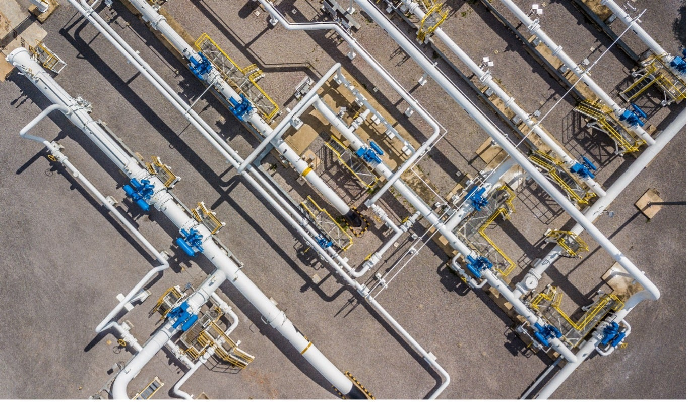
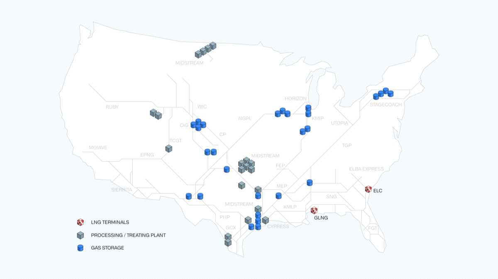
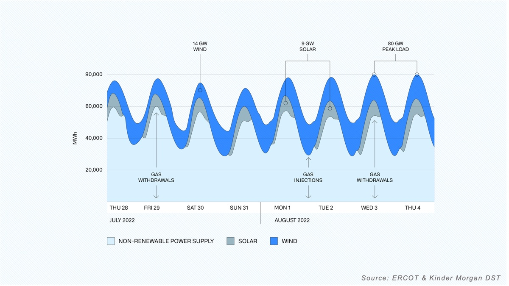

Kinder Morgan + Palantir
为数百万用户提供安全、可靠、高效的能源保障。

运营美国最大的地下天然气储存业务

作为北美关键能源基础设施企业，Kinder Morgan 运营着美国最大的地下天然气储存业务，其工作天然气储存容量高达7000亿立方英尺。得益于庞大的储存容量加上公司强健的管网连接，即便在最寒冷的冬季和最炎热的夏季，也能为数百万客户提供可靠的服务。
鉴于其在保障能源供应方面的关键作用，Kinder Morgan 致力于持续优化运营，并深化对能源市场的洞察。然而，从能源需求波动到数据集分散等各类挑战，极易导致运营效率低下、流程耗时且响应滞后。
利用 Foundry 为德克萨斯州能源市场构建决策支持工具
Kinder Morgan 部署了 Foundry 来解决这些挑战。该公司的 Foundry 概念验证旨在洞察德克萨斯州能源市场，从而在不断变化的环境中改善运营。为此，他们着手打造一款前瞻七天的决策支持工具（DST）。
德克萨斯州能源市场波动剧烈，负荷摆动巨大——日内电力需求可能在 35,000 兆瓦到 80,000 兆瓦之间游走，而风电供应的可用性也会大幅波动，数小时内就可能从 30,000 兆瓦骤降至 1,000 兆瓦。鉴于这种不可预测性，德州电力可靠性委员会（ERCOT）依赖快速启动的燃气轮机来稳定电网；而 Kinder Morgan 则凭借其地下储存设施的天然气，满足这种激增的燃料需求。
预测需求何时会突增或骤降，是 Kinder Morgan 多年来摸索出的一门“手艺”。工程师、营销人员和分析人员往往要耗费数小时收集气象、电力需求及电力供应数据，以确保管网和天然气储存设施配置得当，满足市场需求。
Kinder Morgan 的首个 Foundry 用例涉及整合多个数据源，为其中游地下天然气储存业务构建决策支持工具（DST）。在使用 Foundry 之前，这项整合工作需要从多个站点提取数据，耗时两三个小时；如今，数据通过程序化方式自动提取，并在两三分钟内转化为具备实操性的洞察。

如今，Kinder Morgan 在 Foundry 中构建的 DST 融合了气象数据和电力预测，从而预判德克萨斯州市场的天然气需求，提升了公司满足快速响应燃料市场需求的能力。
影响
整合呈现未来七天的市场需求、供应、气象驱动因素以及 Kinder Morgan 实时响应能力
每日节省两到三个小时的气象、需求和供应数据市场分析时间
使用相同数据源，为市场和 Kinder Morgan 运营提供跨部门同步视图
供需的量化视图（对比以往定性的历史视角）
在预计需求较低的日子规划维保作业
通过提前配置设施以满足未来能源需求，实现对市场需求的更快响应
数据一致性与提取速度的提升，改善了对市场需求的响应能力